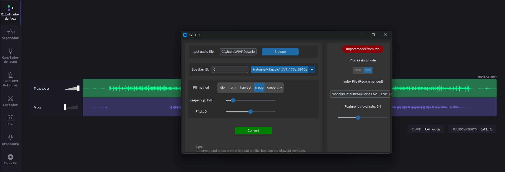
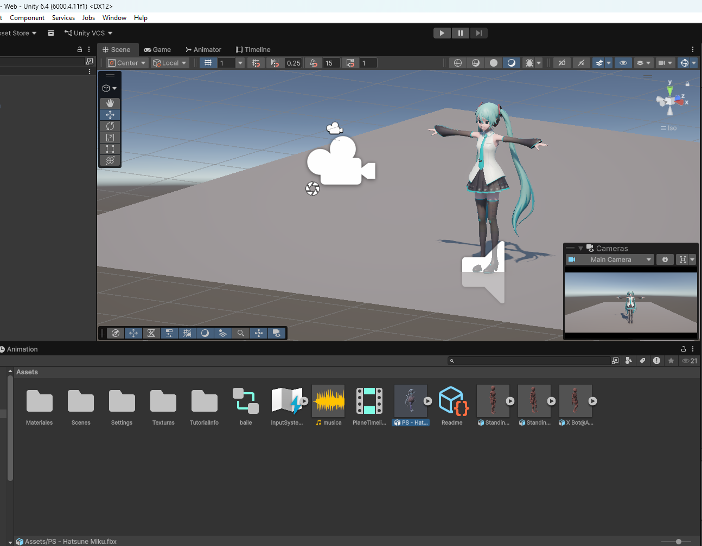
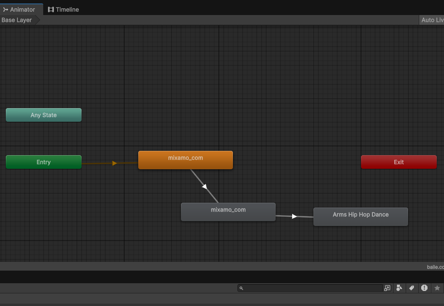
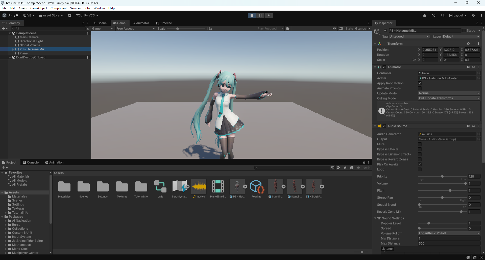

Se cargó el modelo de voz entrenado junto con el archivo de audio original. RVC procesó la grabación y generó una nueva versión utilizando la voz seleccionada.

El audio generado se importó al proyecto de Unity junto con los modelos y recursos necesarios para la escena.

Se utilizó el componente Animator para asignar y organizar las animaciones del personaje que acompañarán la reproducción de la música.

Integración de la animación y el audio dentro de la escena. El personaje reproduce sus movimientos mientras se escucha la canción generada, completando la demostración del proyecto.